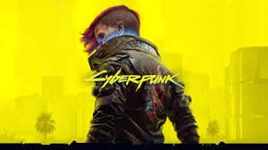
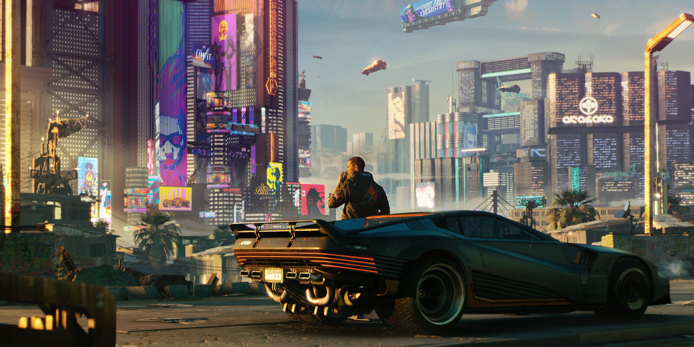

ข้อมูลเกมที่น่าสนใจ: Cyberpunk 2077
**Cyberpunk 2077** เป็นเกมแอคชั่น RPG โลกเปิด ที่เล่าเรื่องราวในเมืองอนาคตอันมืดมิดที่เรียกว่า Night City คุณจะสวมบทบาทเป็น V ทหารรับจ้างไซเบอร์พังก์ที่ต้องเผชิญกับโลกที่เต็มไปด้วยเทคโนโลยีล้ำสมัย การดัดแปลงร่างกาย และอาชญากรรม

ภาพปกเกม Cyberpunk 2077 ที่แสดงถึงบรรยากาศของ Night City
รายละเอียดเบื้องต้นของเกม
- ชื่อเกม: Cyberpunk 2077
- แนวเกม: แอคชั่น RPG, โลกเปิด, ไซเบอร์พังก์ (Action RPG, Open World, Cyberpunk)
- ผู้พัฒนา: CD Projekt Red
- ผู้เผยแพร่: CD Projekt
- วันที่วางจำหน่ายครั้งแรก: 10 ธันวาคม 2020
- แพลตฟอร์ม: PC (Windows), PlayStation 4/5, Xbox One/Series X|S
เรื่องราวหลักโดยย่อ
คุณคือ V ทหารรับจ้างที่กำลังไล่ล่าอิมแพลนท์ที่มีเอกลักษณ์เฉพาะตัว ซึ่งเป็นกุญแจสู่ความเป็นอมตะ ใน Night City เมืองขนาดมหึมาที่ความทะเยอทะยานและเทคโนโลยีถูกผสานรวมกับอาชญากรรม คุณจะได้สร้างตัวละครของคุณเอง เลือกทักษะ กำหนดเส้นทางชีวิต และตัดสินใจที่มีผลต่อชะตากรรมของคุณและคนรอบข้าง

ทิวทัศน์อันน่าตื่นตาของ Night City
คุณสมบัติเด่น
- **เมืองอนาคต Night City:** สำรวจเมืองขนาดใหญ่ที่มีชีวิตชีวาและเต็มไปด้วยรายละเอียด ซึ่งแต่ละย่านมีเอกลักษณ์และเรื่องราวของตัวเอง
- **การปรับแต่งตัวละคร:** สร้างตัวละคร V ของคุณเองอย่างอิสระ ตั้งแต่รูปลักษณ์ไปจนถึงทักษะและความสามารถ
- **ทางเลือกและผลลัพธ์:** การตัดสินใจของคุณส่งผลกระทบต่อเรื่องราวและความสัมพันธ์กับตัวละครอื่น ๆ อย่างลึกซึ้ง
- **ระบบการต่อสู้ที่หลากหลาย:** ทั้งการต่อสู้ด้วยอาวุธปืนระยะไกล การต่อสู้ระยะประชิด และความสามารถในการแฮกไซเบอร์
- **เนื้อเรื่องที่เข้มข้น:** ดำดิ่งสู่เรื่องราวที่เขียนขึ้นมาอย่างดี พร้อมกับนักแสดงชื่อดังอย่าง Keanu Reeves ในบท Johnny Silverhand